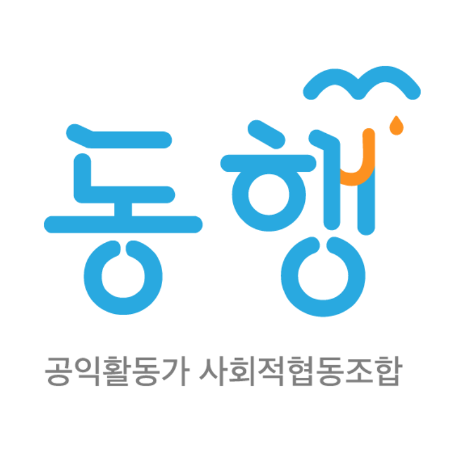

공익활동가 사회적협동조합 동행
늘 곁에서 묵묵히 땀 흘리는 동료 활동가에게
서로가 서로의 우산이 되어주는 단단한 안전망, 동행을 소개해 주세요.
기존 조합원이 동료 활동가에게 동행을 소개해 주는 캠페인이에요 🌉
동료 활동가와 동행을 잇는 징검다리가 되어주세요!
세상의 변화를 만드는 공익활동가,
하지만 활동가의 일상은
위태로울 때가 많습니다.
활동가들의 병의원 미충족 의료율이 일반 집단 대비 약 3~4배 높습니다. 경제적·시간적 한계를 극복하기 위해 건강검진 및 긴급의료비를 지원합니다.
활동가 설문조사 결과, 주변 사람에 대한 동행 추천 지수 9.25점! 동행은 심리 상담, 여행 및 재충전을 입체적으로 지지합니다.
불안정한 자원을 메우는 상호 자조 기금을 마련하고, 긴급 생활비 저금리 소액 대출과 상호부조(경조사비) 체계를 갖추고 있습니다.
"힘든 것을 무리해서 넘기는 것은 끝이 없습니다."
동행은 일하는 동안 몸과 마음의 건강을 챙기고 오래 일할 수 있는 연대의 비빌 언덕이 됩니다.
추천해주고 싶은 동료에게
추천 문구와 함께 가입 링크를 보냅니다.
동료가 가입 시 필수 납부 항목인 출자금 및 월조합비를 납부할 수 있도록 챙겨주세요!
동료가 가입할 때 가입 페이지의 [추천인] 칸에 조합원님의
[이름+전화번호 뒷자리]를 적었는지 확인!
캠페인 기간 동안 최소 1명 이상 추천을 완료하신 조합원님께 드려요! (인당 1회 신청 가능)
추천 가입 확인 완료 후 발송되는 알림톡의 신청 링크에 접속합니다.
신청 완료일 기준 최대 1달 이내로 음료 기프티콘 2매가 발송됩니다.
가입한 신규 회원 혹은 주변 동료와 커피를 마시며 동행의 경험을 나눕니다.
함께 보낸 시간의 후기 입력 구글폼을 간단하게 채워 제출해 주세요.
징검다리 지원금은 신청서 제출 순(선착순 50명)으로 마감되며, 참여 현황에 따라 캠페인이 조기 종료될 수 있습니다.
추천을 받아 가입하신 조합원님의 출자금 / 최초 조합비 납부가 확인되어야 신청이 접수됩니다.